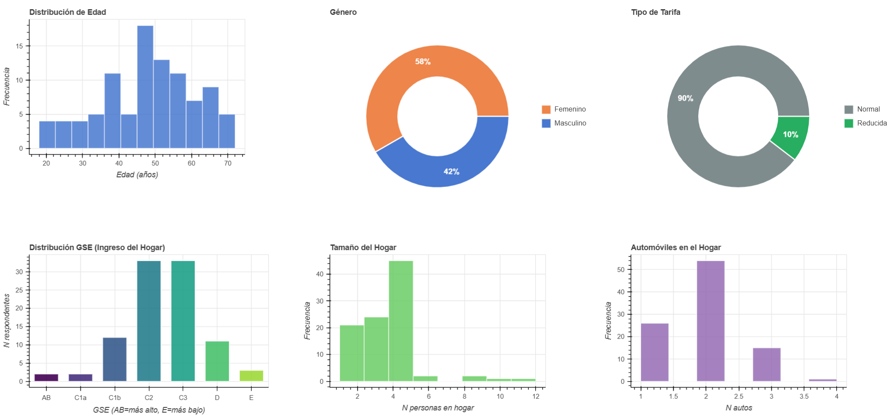
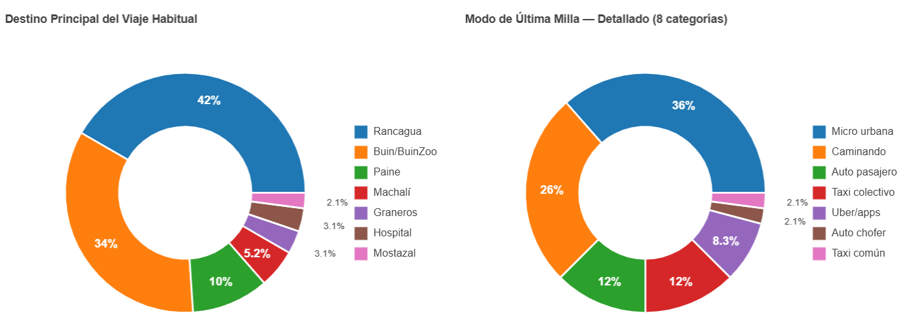
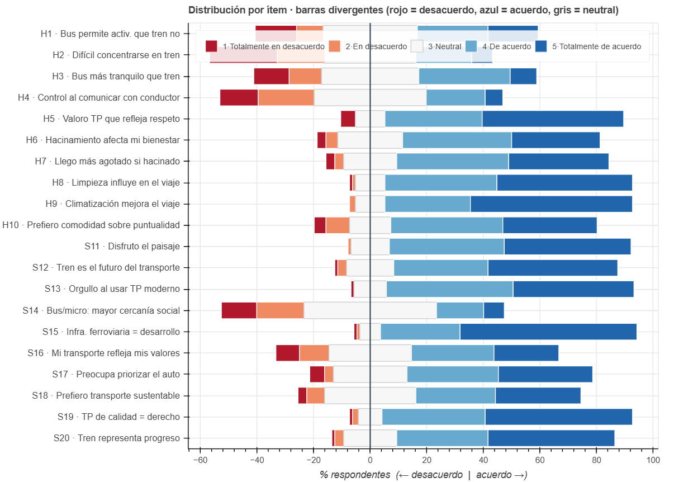

Resultados piloto encuesta 1
tesis
transporte
Resultados de piloto de encuesta sobre elección entre micro bus y tren entre Santiago y Rancagua
Caracterización de la muestra
El primer piloto contó con 224 respuestas desde Netquest, de las cuales 96 respuestas fueron consideradas válidas (gente que efectivamente usaba el corredor).
Es un poco complejo el índice de incidencia (estamos bajo el 50% de opbacioón objetivo vs población encuestada). Ojalá se pueda hacer algo al respecto desde Netquest.
A continuación, se muestran algunos gráficos de caracterización:



Modelos preliminares
Se plantearon 3 modelos de Logit Mixto. Las especificaciones se muestran a continuación
MXL - Efecto panel + variables instrumentales (medibles)
MXL - Efecto panel + variables instrumentales + variables hedónicas
MXL - Indicadores de satisfacción por modo agregados
Resultados
A continuación, se muestran los resultados de las estimaciones de los modelos anteriores:
| Parameter | Category | Model 0 | Model 1 | Model 2 |
|---|---|---|---|---|
| \(ASC_{train}\) (Fixed) | – | 0.0000 (–) | 0.0000 (–) | 0.0000 (–) |
| \(ASC_{bus}\) | – | -1.4232 (-4.64)*** | -1.6964 (-5.02)*** | -0.6692 (-0.38) |
| \(ASC_{micro}\) | – | -1.2302 (-2.57)** | -1.2080 (-2.49)** | -0.1689 (-0.09) |
| \(\beta_{tt}\) (Travel Time) | Instrumental | -0.01295 (-2.78)*** | -0.01253 (-2.62)*** | -0.01212 (-2.55)** |
| \(\beta_{cost}\) (Cost) | Instrumental | -0.000173 (-2.86)*** | -0.000150 (-2.45)** | -0.000151 (-2.48)** |
| \(\beta_{hw}\) (Headway) | Instrumental | -0.00452 (-1.26) | -0.00334 (-0.92) | -0.00332 (-0.90) |
| \(\beta_{var}\) (Variability) | Instrumental | -0.00107 (-0.18) | -\(3.4 \times 10^{-5}\) (-0.01) | -\(8.2 \times 10^{-5}\) (-0.01) |
| \(\beta_{lmt}\) (Last-Mile Time) | Instrumental | -0.00220 (-0.17) | -0.00783 (-0.58) | -0.00612 (-0.45) |
| \(\beta_{crowd}\) (Crowding) | Hedonic | – | -0.1569 (-3.58)*** | -0.1570 (-3.57)*** |
| \(\beta_{aircon}\) (Air Conditioning) | Hedonic | – | -0.1223 (-0.92) | -0.1200 (-0.90) |
| \(\beta_{sellers}\) (Vendors) | Hedonic | – | -0.1033 (-0.73) | -0.0985 (-0.70) |
| Satisfaction Indices (sum of 9 Likert items per mode, range 9–45) | ||||
| \(\beta_{satisf,train}\) | Latent proxy | – | – | -0.1628 (-3.54)*** |
| \(\beta_{satisf,bus}\) | Latent proxy | – | – | -0.1040 (-1.96)* |
| \(\beta_{satisf,micro}\) | Latent proxy | – | – | -0.1551 (-3.58)*** |
| Error Components (Hess et al. 2008 spec, single shared \(\sigma\)) | ||||
| \(\sigma_{panel}\) | – | 1.6260 (8.88)*** | 1.6592 (8.90)*** | 1.4820 (9.11)*** |
| Fit Statistics | ||||
| Observations / Individuals | – | 1225 / 96 | 1225 / 96 | 1225 / 96 |
| Estimated parameters | – | 8 | 11 | 14 |
| Final Log-Likelihood | – | -695.26 | -688.38 | -677.46 |
| AIC | – | 1406.52 | 1398.77 | 1382.91 |
| BIC | – | 1447.41 | 1454.98 | 1454.46 |
| Adj. \(\rho^2\) (vs. Equal Shares) | – | 0.3450 | 0.3486 | 0.3560 |
Robust t-ratios in parentheses. Significance: *** $p < 0.01$, ** $p < 0.05$, * $p < 0.10$.<br>
All three models share the Hess et al. (2008) error-component specification: a single $\sigma_{panel}$ scaling iid normal draws on each of the three alternative-specific error components, identified by the independence of the draws under the panel data structure. Model 0 includes only instrumental attributes; Model 1 adds qualitative hedonic attributes; Model 2 further incorporates a satisfaction index per mode (sum of nine Likert items on perceived service quality), entering only the utility of its respective mode.<br>
Likelihood Ratio Tests: Model 0 vs. Model 1: $LR = 13.76$, df=3, $p < 0.01$ (rejection of restricted model). Model 1 vs. Model 2: $LR = 21.84$, df=3, $\chi^2_{0.01,3}=11.345$, $p < 0.01$ (joint significance of the three satisfaction indices).Código
MXL - Efecto panel
# ==============================================================================
# LOGIT MIXTO PANEL - ESPECIFICACION HESS et al. (2008)
# ==============================================================================
# Componentes de error iid (entre alternativas, no entre observaciones)
# en las TRES alternativas, con UNA sola sigma compartida.
# Identificacion garantizada por la independencia de los draws entre
# alternativas y la estructura panel.
# Referencia: Apollo Manual, seccion 6.2 / Figura 6.7.
# ==============================================================================
# -- Configuracion SLURM (procesado por submit_to_nlhpc.py) -------------------
# @slurm partition = "debug"
# @slurm time = "00:30:00"
# @slurm cores = 44
# @slurm mem_per_cpu = 345
# @db C:/Users/Pablo/Desktop/tesis-magister/SP/netquest-soft_start-v2/data/master_db_netquest_soft_start_v2.csv
# 1. ENTORNO -------------------------------------------------------------------
if (!nzchar(Sys.getenv("SLURM_JOB_ID")) &&
requireNamespace("rstudioapi", quietly = TRUE) &&
rstudioapi::isAvailable()) {
setwd(dirname(rstudioapi::getSourceEditorContext()$path))
}
# install.packages("apollo")
library(apollo)
library(dplyr)
rm(list = ls())
apollo_initialise()
# Cores: NLHPC lo dicta via SLURM; local default = 8
nCores_use <- as.integer(Sys.getenv("SLURM_CPUS_PER_TASK", unset = "8"))
cat("[INFO] Usando", nCores_use, "cores\n")
# Path BBDD
db_dir <- Sys.getenv(
"NLHPC_DB_DIR",
unset = "C:/Users/Pablo/Desktop/tesis-magister/SP/netquest-soft_start-v2/data/"
)
database <- read.csv(file.path(db_dir, "master_db_netquest_soft_start_v2.csv"))
names(database) <- trimws(names(database))
database[is.na(database)] <- 0
# FILTRO: Eliminar observaciones donde se eligio el opt-out (alternativa 4)
database <- subset(database, choice != 4)
# ==============================================================================
# 2. CONFIGURACION DE APOLLO
# ==============================================================================
apollo_control <- list(
modelName = "modelo3-Panel_Hess_SinOptOut - Netquest v2",
modelDescr = "Logit Mixto Panel - Hess et al. 2008 (EC iid en las 3 alternativas) - Sin Opt-Out - Netquest v2",
indivID = "id_response",
mixing = TRUE,
nCores = 8,
outputDirectory = "output"
)
# ==============================================================================
# 3. DEFINICION DE PARAMETROS A ESTIMAR
# ==============================================================================
apollo_beta <- c(
asc_train = 0,
asc_bus = 0,
asc_micro = 0,
# Nivel de Servicio
b_tt = 0,
b_cost = 0,
b_lmt = 0,
b_hw = 0,
# Confort y Confiabilidad
b_var = 0,
b_crowd = 0,
b_aircon = 0,
b_sellers = 0,
# ----------------------------------------------------------------------------
# CAMBIO CLAVE 1: una sola sigma compartida en lugar de sigma_bus y sigma_micro
# Valor inicial 0.5 (no 0) para evitar partida en una region plana de la LL.
# ----------------------------------------------------------------------------
sigma_panel = 0.5
)
# Constante del tren como referencia (esto no cambia respecto al modelo anterior)
apollo_fixed <- "asc_train"
# ==============================================================================
# 4. CONFIGURACION DE DRAWS
# ------------------------------------------------------------------------------
# CAMBIO CLAVE 2: TRES draws normales independientes, uno por alternativa
# (antes habian dos: draw_bus y draw_micro). Ahora se incluye tambien draw_train.
# La independencia entre estos tres draws es lo que garantiza identificacion
# en datos panel pese a tener EC en TODAS las alternativas.
# ==============================================================================
apollo_draws = list(
interDrawsType = "mlhs",
interNDraws = 2000,
interUnifDraws = c(),
interNormDraws = c("draw_train", "draw_bus", "draw_micro"),
intraDrawsType = "halton",
intraNDraws = 0,
intraUnifDraws = c(),
intraNormDraws = c()
)
# ==============================================================================
# 5. COEFICIENTES ALEATORIOS
# ------------------------------------------------------------------------------
# Tres EC, todos con la MISMA sigma_panel (homocedasticidad). Cada EC usa
# un draw distinto, lo que los hace independientes entre alternativas pero
# constantes a lo largo de las T situaciones de cada persona (efecto panel).
# ==============================================================================
apollo_randCoeff = function(apollo_beta, apollo_inputs){
randcoeff = list()
randcoeff[["ec_train"]] = sigma_panel * draw_train
randcoeff[["ec_bus"]] = sigma_panel * draw_bus
randcoeff[["ec_micro"]] = sigma_panel * draw_micro
return(randcoeff)
}
apollo_inputs <- apollo_validateInputs()
# ==============================================================================
# 6. FUNCION DE PROBABILIDADES
# ------------------------------------------------------------------------------
# CAMBIO CLAVE 3: el EC se suma a las TRES utilidades (incluida la del tren),
# no solo a las J-1 alternativas como en el modelo anterior.
# ==============================================================================
apollo_probabilities <- function(apollo_beta, apollo_inputs, functionality = "estimate"){
apollo_attach(apollo_beta, apollo_inputs)
on.exit(apollo_detach(apollo_beta, apollo_inputs))
P <- list()
V <- list()
V[["train"]] <- asc_train + ec_train +
b_tt * train_tt +
b_cost * train_cost +
b_lmt * train_lmt +
b_hw * train_headway +
b_var * train_arrival_time_variability +
b_crowd * train_crowding_ordinal +
b_aircon * train_aircon_ordinal +
b_sellers * train_sellers_ordinal
V[["bus"]] <- asc_bus + ec_bus +
b_tt * bus_tt +
b_cost * bus_cost +
b_lmt * bus_lmt +
b_hw * bus_headway +
b_var * bus_arrival_time_variability +
b_crowd * bus_crowding_ordinal +
b_aircon * bus_aircon_ordinal +
b_sellers * bus_sellers_ordinal
V[["micro"]] <- asc_micro + ec_micro +
b_tt * micro_tt +
b_cost * micro_cost +
b_lmt * micro_lmt +
b_hw * micro_headway +
b_var * micro_arrival_time_variability +
b_crowd * micro_crowding_ordinal +
b_aircon * micro_aircon_ordinal +
b_sellers * micro_sellers_ordinal
mnl_settings <- list(
alternatives = c(train = 1, bus = 2, micro = 3),
avail = list(train = av_train, bus = av_bus, micro = av_micro),
choiceVar = choice,
utilities = V
)
P[["model"]] <- apollo_mnl(mnl_settings, functionality)
P <- apollo_panelProd(P, apollo_inputs, functionality)
P <- apollo_avgInterDraws(P, apollo_inputs, functionality)
P <- apollo_prepareProb(P, apollo_inputs, functionality)
return(P)
}
# ==============================================================================
# 7. ESTIMACION Y RESULTADOS
# ==============================================================================
model <- apollo_estimate(apollo_beta, apollo_fixed, apollo_probabilities, apollo_inputs)
apollo_modelOutput(model)
apollo_saveOutput(model)